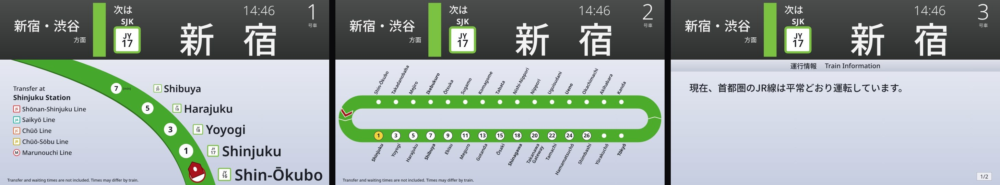
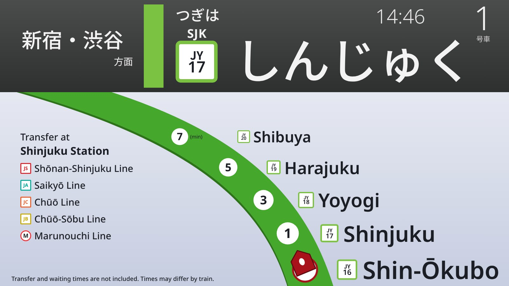
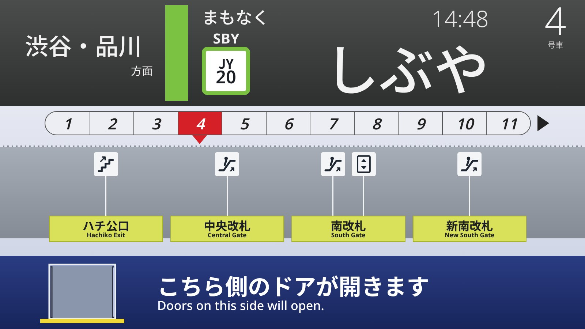
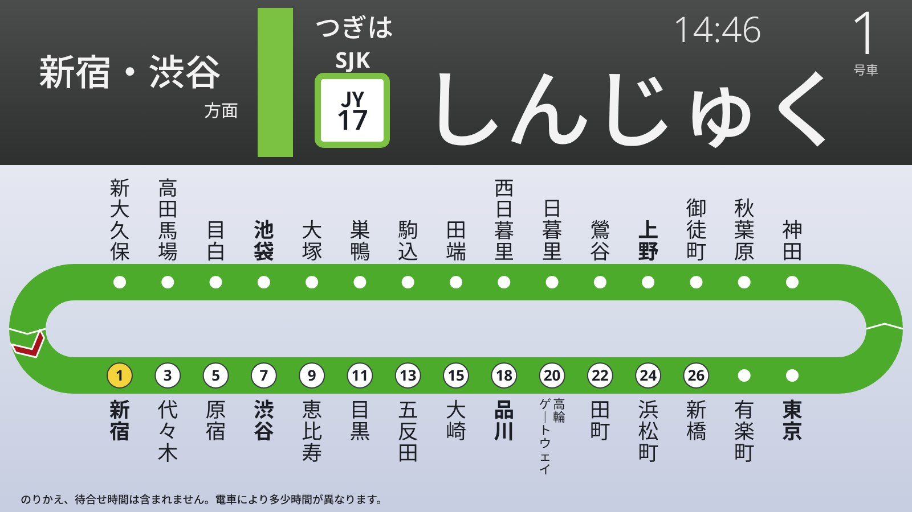
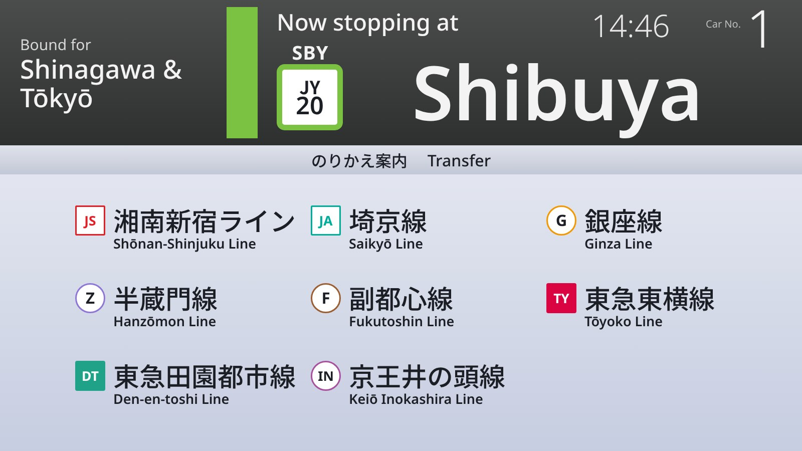

A free Windows screensaver that recreates the passenger information screens on Tokyo's Yamanote Line E235 trains. It rides the real loop with all 30 stations, and every monitor becomes its own car.

What it does
All 30 stations with real running times, transfer lines and exit names. The train runs both directions around the loop and stops at every station.
Each screen is its own car, numbered left to right, and no two screens show the same thing at once. Wide monitors get two or three cars side by side.
The header cycles through kanji, kana and English like the real screens, while the lower screen moves between the line maps, platform guide, transfers and train info.
Dim the screens down to 20% brightness and switch between a 24-hour and 12-hour clock. Everything runs offline, fonts included.
The screens




Install on Windows
C:\Windows (Windows will ask for admin approval). If you install it from your Downloads folder and later delete it, the screensaver stops working.The live demo is the same display as a single web page, so it runs anywhere with a modern browser. Press F11 for full screen.
On a Mac, a free screensaver like WebViewScreenSaver can show the demo page. With Lively Wallpaper on Windows, use the HTML file from the zip and set it to span all screens.
Add these to the end of the demo address:
?dim=40 makes it 40% darker?clock=12 uses a 12-hour clock?cars=3 shows three cars side by side?car=4 starts numbering at car 4Combine them with &, like ?dim=40&clock=12.
Requirements
Windows 10 or 11 with the Microsoft Edge WebView2 Runtime, which comes with Windows 11 and nearly every up-to-date Windows 10 PC. If the screen stays black, install WebView2 from Microsoft. No internet connection is needed once it's installed.
Credits
Vibe coded by Claude, with minor help and supervision by Bash Creates.
Fonts: Noto Sans, Noto Sans JP and Noto Sans Mono under the SIL Open Font License. Built with Go and go-webview2. Full license texts are in the download.
An unofficial fan project, not affiliated with or endorsed by JR East. Station names, line colours and transfer information are public reference information, and running times are approximate.